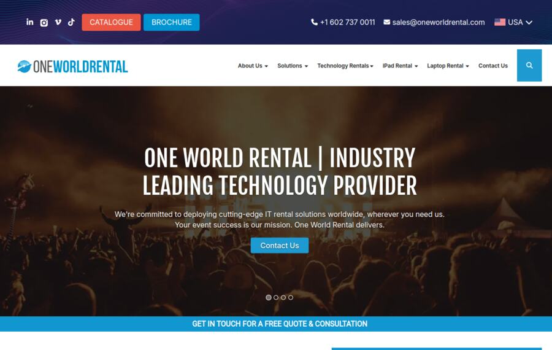
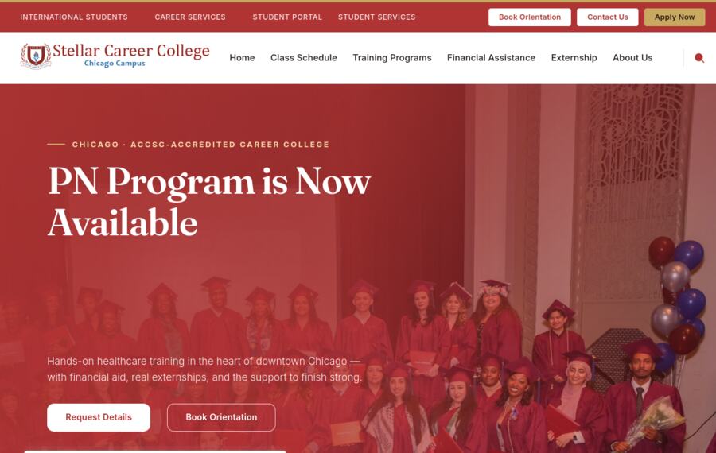
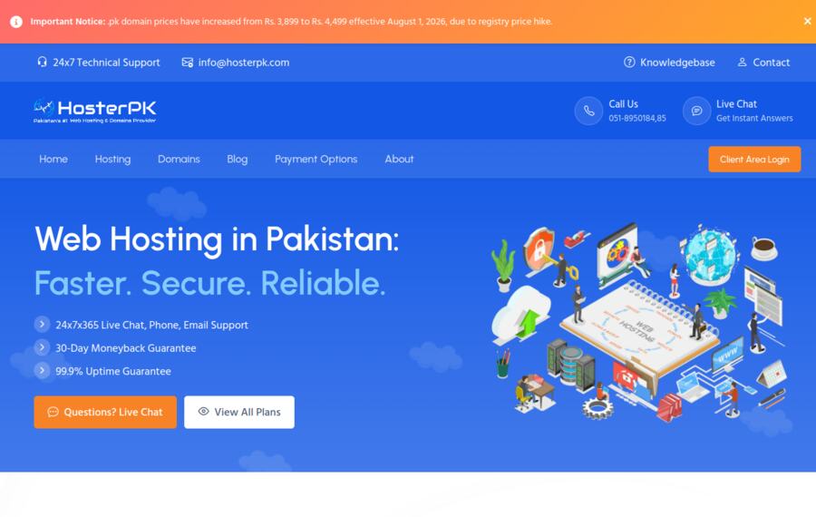
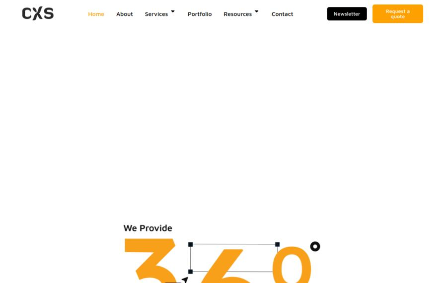

⌕
SEO & Organic Growth
Technical SEO, content architecture, keyword strategy and authority building designed around searches that can become business.
- Technical and on-page SEO
- Content and keyword systems
- Local and international growth
● SEO · PAID MEDIA · LEAD GENERATION
Fix My Search connects visibility, advertising, landing pages and measurement into one focused acquisition system—built to turn attention into qualified opportunities.
01 / SERVICES
Stop managing disconnected tactics. We connect every channel to the same commercial outcome: better leads and measurable growth.
Technical SEO, content architecture, keyword strategy and authority building designed around searches that can become business.
Google, Meta and paid-social campaigns organized around intent, creative testing, efficient spend and qualified acquisition.
Offers, landing pages, forms, CRM routing and follow-up journeys that reduce friction between interest and action.
A practical operating plan across content, social media, websites, analytics and AI-assisted execution.
THE FIX MY SEARCH DIFFERENCE
02 / SELECTED WORK
Work across transport, education, hosting, healthcare and technology—connecting search visibility with acquisition and better digital experiences.

Paid advertising, organic traffic, lead generation and SEO brought together as one acquisition engine.
SEO and paid acquisition focused on expanding visibility and capturing high-intent searches.

Campaign direction, social media, SEO content and lead-generation support.

Technical optimization, content planning and organic growth in a competitive hosting market.
A clearer healthcare web presence supported by content, SEO and conversion-minded UX.

Website presence, brand positioning and online marketing for a technology-focused business.
03 / PROCESS
Focused enough to move quickly, structured enough to measure what changed.
Find the constraint across demand, search, ads, landing pages and follow-up.
Build a focused roadmap around commercial impact, effort and speed.
Launch the pages, campaigns, content and tracking that create movement.
Scale winners, repair leaks and compound progress.
04 / ABOUT
Fix My Search is led by Syed Zulqarnain Haider Gilani, an SEO and digital marketing specialist with 8+ years of experience across organic search, paid acquisition, websites, content, social media and lead generation.
The approach combines the clarity of a strategist with the accountability of an in-house growth partner.
05 / START A CONVERSATION
Share the visibility, campaign, landing-page or measurement problem holding your business back. We’ll identify the first practical fix.
Email Haider ↗Start on WhatsApp ↗hbrgilani@gmail.com · +92 336 5642428